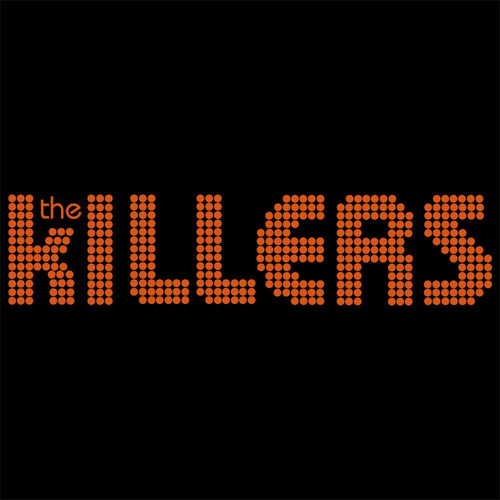

"The killers"
Es una banda de rock estadounidense formada en 2001 en Las Vegas en Nevada por el vocalista, teclista y bajista Brandon Flowers y el guitarrista Dave Keuning. En 2001, Dave Keuning, guitarrista de 25 años que se había mudado desde Iowa a Las Vegas, publicó un anuncio en el periódico, manifestando su deseo de formar una banda de rock. Flowers encontró dicho aviso y acudió al llamado. Luego de conocer a Dave, comenzaron la búsqueda de músicos con estilos similares a ellos. Ambos compartieron sus influencias musicales y pronto empezaron a escribir canciones en el departamento de Keuning. A fines de 2001, grabaron un demo en el estudio Kill The Messenger; el demo contenía cuatro canciones: «Desperate», «Replaceable» y las primeras versiones de «Mr. Brightside» y «Under the Gun». El baterista de la zona, Matt Norcross, se encargó de la percusión en las grabaciones, mientras que Dell Neal, quien anteriormente fue compañero de cuarto de Keuning, se encargó del bajo en dos de las pistas. Keuning y Flowers tocaron en vivo por primera vez en el Café Espresso Roma, en Las Vegas, en enero de 2002; el par, junto con Neal y Norcross, comenzó a tocar en numerosos lugares alrededor de Las Vegas donde, además, entregaban copias gratis de su demo.Sin embargo, The Killers, cuyos primeros conciertos en vivo fueron descritos como novedosos, en el verano boreal de 2002 despidieron al baterista Matt Norcross, fue reemplazado brevemente por Brian Havens, quien también terminó siendo despedido. Posteriormente, el bajista Dell Neal abandonó la banda por motivos personales.